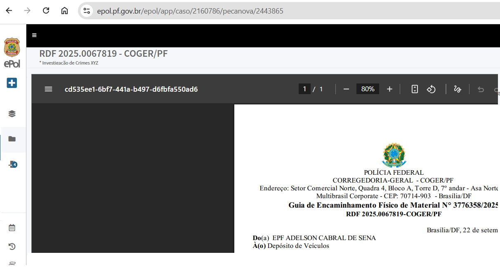

No desencadeamento da ação, as equipes projetadas, imbuídas do propósito da missão, deslocar-se-ão aos locais de interesse e cumprirão as medidas que lhes foram designadas, observando os aspectos operacionais apresentados pela equipe de investigação e/ou coordenação da execução.
Em atenção ao disposto no art. 5º, inciso XI, da Constituição Federal, bem como ao descrito no art. 22, §1º, inciso III, da Lei de Abuso de Autoridade, o cumprimento dos mandados de busca e apreensão deve ocorrer durante o dia, entre as 6 horas da manhã até as 18 horas.
Em regra, as deflagrações de Operação da Polícia Federal ocorrem às 6 horas da manhã. No entanto, a depender do caso concreto, como a peculiaridade de alvos, a existência de diligências que exijam horários mais convenientes ou a deflagração simultânea em estados com fusos-horários distintos, é possível que o cumprimento dos mandados ocorra em outros horários durante o dia, desde que limitado até as 18 horas, “podendo se estender noite adentro, mas não começar após o pôr do sol” (vide STJ, AgRg no RHC 168319/SP)11.
A coordenação deve avaliar, previamente, as distâncias e o tempo de des locamento das equipes de deflagração até o endereço dos alvos, planejando eventuais saídas antecipadas ou retardadas para que a deflagração ocorra de forma simultânea.
É importante que todos os componentes da equipe tenham ciênciade informa ções relevantes sobre o alvo, como o nível de periculosidade, o que será definidor da linha de ação antes e durante a deflagração da medida, devendo-se sempre preservar a segurança da equipe.
Antes de ingressarem no imóvel, a equipe projetada de busca e apreensão deverá avaliar as circunstâncias do local e a periculosidade do alvo. Como pro cedimento padrão, os policiais se anunciarão ao morador ou responsável pelo local, e ato seguinte, lhe mostrarão e lerão o mandado judicial, intimando-o, em seguida, a abrir a porta e conceder acesso aos policiais da equipe projetada (CPP, artigo 245). Contudo, quando o risco da diligência ou a periculosidade dos habitantes o exigir, o procedimento de leitura do mandado poderá ocorrer após a entrada da equipe policial no imóvel.
Manual de Planejamento Operacional, p. 113.
O arrombamento de portas é legítimo, nos termos do artigo 245, § 2º do CPP e sua ocorrência deverá constar no Auto Circunstanciado de Busca e Apreensão, acompanhado de sua justificativa. Na hipótese de arrombamento sem que haja pessoas no local (CPP, artigo 245, § 4º), mostra-se fundamental que, após o encerramento dos trabalhos, a equipe projetada assegure condições mínimas para o fechamento do local, antes de deixá-lo.
A equipe deve se identificar aos habitantes do imóvel e ler o mandado judicial a ser cumprido, sempre considerando a segurança dos policiais envolvidos. Após o ingresso e controlada a situação, o chefe da equipe pode autorizar a entrada de testemunhas, dos servidores de órgãos parceiros e de representantes da comissão de prerrogativas da OAB (se for o caso).
Conforme regramento processual penal, na busca domiciliar, os policiais deverão fazer-se acompanhar de duas testemunhas (CPP, artigo 245, § 7º), as chamadas “testemunhas presenciais”. Contudo, não havendo nas proximidades do local de interesse pessoas que possam servir como tal, os próprios policiais figurarão no respectivo auto circunstanciado como testemunhas.
Na prática, poderá haver um certo temor da testemunha em participar do ato, especialmente quando o local de interesse estiver vinculado a algum criminoso conhecido na região por seu perfil violento. Oportunidade que a equipe projetada deverá esclarecer para a própria testemunha e para as pessoas que estejam no imóvel que aquelas foram recrutadas de forma aleatória, sem qualquer vínculo com a investigação, apenas para garantir a legalidade do ato, não possuindo qualquer interferência na ação.
Poderá ser fornecida certidão de acompanhamento ao ato às testemunhas presenciais, para que estas justifiquem eventual atraso em seu local de trabalho, devendo constar o horário de início e fim das diligências.
No decorrer do cumprimento da medida de busca e apreensão, podem surgir outras situações não previstas inicialmente pela coordenação e que exijam da equipe projetada a utilização de outras técnicas de investigação, como a realização de entrevistas e o registro de imagens, as quais poderão ser feitas observando-se o princípio da oportunidade e sempre prezando pela segurança da equipe policial. Atentar-se pela presença das testemunhas durante as buscas, especificamente nos cômodos diligenciados e, principalmente, quando encontrados objetos de crime ou de flagrante delito.
Enquanto a medida está sendo cumprida, é importante a equipe manter-se sempre atenta às movimentações dos presentes no local, evitando-se tentativas de destruição de provas e primando pela segurança da equipe. Deve-se priorizar a reunião das pessoas presentes em um único local ou cômodo durante a efetivação dos trabalhos.
Durante o cumprimento das diligências, as equipes devem manter contato com a coordenação para comunicar eventuais ocorrências ou sanar dúvidas quanto à apreensão ou não de objetos e/ou bens de valor, o que pode impactar na logística e na futura destinação do material apreendido.
Com certa frequência ocorre que, durante o cumprimento do mandado de busca e apreensão, apareça um advogado representando os interesses da pessoa cuja casa ou empresa sofre a ação policial. Nesta situação, o chefe da equipe projetada deverá avaliar, em decorrência do princípio da segurança operacional e com esteio na Súmula Vinculante STF nº 14, a pertinência do ingresso de referido patrono. Acaso autorizado, o advogado não pode interferir no trabalho policial, pois se trata de diligência em andamento e, se manifestar eventual contrariedade com a ação em andamento, deve ser orientado a peticionar ao presidente do inquérito ou ao juiz que autorizou a busca.
ATENÇÃO!
Necessária se faz a distinção da hipótese em que o alvo objeto da busca seja advogado ou escritório de advocacia. Nesses casos, é imprescindível a presença de representante da Comissão de Prerrogativas da OAB, sob pena de nulidade do ato.
Cabe à equipe de investigação e de coordenação identificar os alvos que necessitarão do acompanhamento de representante da OAB e fazer o contato prévio com aquela instituição (geralmente, no dia anterior à deflagração) e solicitar que seja(m) designado(s) representante(s) para acompanhar as buscas, determi nando um ponto de encontro antes da deflagração da Operação (normalmente, nas Superintendências ou Delegacias).
Desse modo, a equipe projetada fará contato com o representante da OAB, mas só permitirá o ingresso deste no imóvel objeto da busca depois de garantida a segurança do local. As buscas só deverão ser iniciadas na sua presença.
Caso o representante da Ordem dos Advogados não compareça ao local, tal situação deverá ser registrada, não impedindo, no entanto, a realização da diligência.
Ressalte-se, ainda, que a presença de representante da OAB é obrigatória nas buscas em escritório de advocacia. No entanto, considerando a corriqueira possibilidade de trabalho remoto, tem sido extremamente recomendado o acompanhamento do representante das prerrogativas da OAB, igualmente, nas residências dos advogados alvos.
Por fim, não é permitido ao representante da OAB interferir no trabalho policial, sendo a sua presença restrita ao acompanhamento da diligência e preservação das prerrogativas do advogado garantidas pelo Estatuto da OAB. Qualquer discordância quanto aos itens arrecadados deve constar no auto circunstanciado de busca e, posteriormente, ser dirimida pelo juiz competente.
No momento do desencadeamento da ação, alguns documentos já terão de ser formalizados no próprio local de interesse, como a coleta da assinatura do responsável pelo local no Mandado de Busca e Apreensão, bem como no Auto Circunstanciado de Busca e Arrecadação e, se for o caso, no Termo de Consentimento de Busca.
Devem ser feitas observações relacionadas ao estado em que o local da ação se encontrava na chegada dos policiais federais. Não raramente, locais de interesse são preparados para dificultar a obtenção de provas, o que deverá ser formalizado em Informação Policial específica. É importante também registrar o apoio de servidores de outros órgãos, sendo o caso, e a eventual presença e acompanhamento de advogado do investigado.
Tudo o que for arrecadado durante o cumprimento da medida deverá ser relacionado de forma pormenorizada no Auto Circunstanciado de Busca e Arrecadação ou de Apreensão, sendo necessário que as equipes projetadas sejam orientadas a não documentar as apreensões de forma genérica, mas sim dediquem esforços para individualizar os objetos. Tal conduta irá minimizar even tuais questionamentos relacionados à cadeia de custódia durante o superveniente processo penal.
Também relevante destacar que a diligência de busca deve ser realizada de forma bastante criteriosa, evitando-se a arrecadação de materiais desinteressantes à prova. Dessa forma, quanto mais conhecimento a equipe de cumprimento de mandados tiver acerca do mérito da ação, maior a probabilidade de precisão em sua atuação, o que terá reflexo na arrecadação de itens absolutamente pertinentes ao interesse da apuração.
Orienta-se a reunião dos objetos arrecadados por espécie (documentos, mídias, automóveis, armas etc.), acondicionando-os em volumes separados, cada qual com seu lacre. A função do lacre é manter a cadeia de custódia do material apreendido. Importante constar no respectivo auto o número do lacre de cada volume.
O fato de nada ter sido localizado e arrecadado no local de interesse não afasta a obrigação da equipe projetada de formalizar o Auto Circunstanciado de Busca e Arrecadação e colher a assinatura do responsável e das testemunhas, devendo constar no documento que nada foi arrecadado e consignadas eventuais ocorrências verificadas durante a ação. Se houver indícios de que o local foi limpo anteriormente para evitar a colheita de provas, deve-se verificar a existência de câmeras de vigilância no local ou nas proximidades, ou ainda informações de testemunhas que possam ter presenciado movimentações anormais no local. Caso positivo, todos esses fatos deverão ser registrados no auto circunstanciado.
Por fim, deve-se relembrar que a equipe de execução deve manter constante contato com a coordenação da operação, comunicando tanto a normalidade da ação quanto qualquer ocorrência que exija a adaptação da estratégia inicialmente definida.
Durante o cumprimento da diligência, é fundamental a atenção na coleta dos elementos de interesse. Além de realizar as buscas com o enfoque nos fatos investigados, é preciso documentar o local em que os itens foram encontrados, notadamente quando for visível a intenção de ocultação de provas.
Nesse sentido, deve-se evitar a arrecadação indiscriminada de documentos e mídias que não possuem relação com os fatos investigados, ressalvando-se os eventuais encontros fortuitos de prova ou situações flagranciais.
Também é preciso ter cuidado na manipulação dos elementos de interesse, principalmente quando puderem ser objeto de análise pericial ou houver vestígios de crime que demandem diligências específicas e possivelmente irrepetíveis (como análise papiloscópica).
Antes da apreensão, ainda na fase de arrecadação, a cadeia de custódia exige a descrição pormenorizada do item no Auto Circunstanciado de Busca e Arrecadação ou Auto Circunstanciado de Busca e Apreensão12, incluindo o uso de itens de individualização, como lacres, malotes, etiquetas, envelopes e sacos plásticos.
Em se tratando de eletrônicos que possam conter dados, como no caso de smartphones ou pen drives, cada item deverá ser descrito separadamente e, por conseguinte, deverá ser acondicionado em um envelope lacrado, conforme previsto na IN 255/2023:
“É vedado o registro de diferentes elementos de interesse no
mesmo item da apreensão” (parágrafo único, art. 139); e
“Os elementos de interesse apreendidos serão: I – acondiciona
dos em invólucro lacrado, sempre que sua natureza permitir”
(inciso I, art. 140). 12 Manual de Planejamento Operacional, p. 127.
No caso de smartphones, uma diligência adicional é protegê-lo com papel alumínio ou similares, como tecidos de blindagem ou bolsas de Faraday, para evitar a transmissão de sinal para o referido objeto durante o trajeto entre o local de busca e o retorno à base operacional, pois agirá como uma barreira que impede a entrada e saída de ondas de rádio13.
As equipes de deflagração também deverão ser orientadas que, no cadastro do bem, devem ser carregadas suas fotos (ou digitalizado seu conteúdo, caso se trate de documentos), além de outros cuidados que veremos a seguir. Além disso, a própria localização do elemento de interesse deve ser fotografada quando for relevante, como seria o caso, por exemplo, de bens escondidos em fundos falsos ou que tenham sido voluntariamente escondidos. A foto do ambiente também poderá ser útil para informar exatamente onde se encontravam os itens ou como estava o local. Já houve, inclusive, identificação de explorador sexual infanto juvenil por causa de uma foto de um banheiro.
Após a deflagração da operação policial, o malote deve ser lacrado quando da transferência da cadeia de custódia, que se dá, por exemplo, quando a equipe de cumprimento de mandado entrega o material para a equipe de cartório para conferência14.
Durante o cumprimento de mandados, é possível que a equipe policial se depare com situações flagranciais, hipótese em que deverá proceder à prisão em flagrante dos autores da infração (artigo 301 do CPP).
A análise de risco quanto à possibilidade de ocorrência de flagrantes em locais de cumprimento de busca deve ser realizada pela equipe de investigação e pela coordenação de execução, devendo constar da ficha de alvo a informação sobre alta probabilidade de ocorrência de flagrantes, quando assim se constatar.
Algumas hipóteses comuns de flagrantes no curso de operações se dão em crimes permanentes, tais como a posse ou porte ilegal de armas de fogo (artigos 12, 14 ou 16 da Lei nº 10.826/2003), o acondicionamento de drogas (artigo 33 da Lei nº 11.343/2006), a lavagem de capitais (artigo 1º da Lei nº 9.613/1998), entre outros.
Esse efeito está ligado ao princípio da Gaiola de Faraday, um invólucro feito de material condutor que bloqueia campos eletromagnéticos. Ao envolver um celular em várias camadas de papel alumínio, você cria uma espécie de gaiola de Faraday improvisada. Se o invólucro for bem feito e não tiver falhas, ele pode interromper completamente os sinais de celular (2G, 3G, 4G, 5G), Wi-Fi e Bluetooth. No entanto, se houver furos ou se o papel não estiver bem vedado, a eficácia pode ser parcial.
Manual de Planejamento Operacional, p. 128.
A destruição de celulares, computadores e documentos pelo suspeito, ao perceber a chegada da polícia para execução das medidas, pode caracterizar o crime de fraude processual (artigo 347 do Código Penal), ou mesmo o crime previsto no artigo 2º § 1º da Lei nº 12.850/2013, caso se trate de investigação versando sobre organização criminosa.A identificação do flagrante deve ser pormenorizada no Auto Circunstanciado de Busca e Arrecadação, na Informação de Polícia Judiciária e no Relatório de Diligência, sem prejuízo da formalização do Auto de Prisão em Flagrante.
O Auto de Prisão em Flagrante deverá ser lavrado nos termos do CPP, devendo ser a prisão formalizada em base designada pela coordenação de execução da operação, que definirá previamente se a lavratura de eventual flagrante será de responsabilidade:
a) da própria equipe de cumprimento de mandado;
b) de uma equipe designada especialmente para a lavratura de flagrantes
no curso da operação; ou
c) pelo sobreaviso ou plantão regular da unidade para a qual o flagrante
é encaminhado.
Em regra, a prisão em flagrante deve ser lavrada pela Polícia Federal, ainda que o crime não seja necessariamente de sua atribuição, salvo se, a critério da coordenação, seja sugerido o seu encaminhamento para a Polícia Civil.
O flagrante por ato infracional (praticado por menor) será encaminhado para a Polícia Civil, impreterivelmente.
Do ponto de vista procedimental, o flagrante deverá ser comunicado ao juízo competente, dentro do prazo legal, devendo cópia do procedimento flagrancial ser encaminhada à equipe de investigação, juntamente com as demais peças produzidas.
Ressalte-se que o material que tiver relação direta com o flagrante deverá ser apreendido de forma apartada, no âmbito do procedimento flagrancial, ainda que tenha constado no mesmo Auto Circunstanciado de Arrecadação.
A coordenação deverá prever, ainda, em seu planejamento, as tarefas neces sárias para o encaminhamento dos presos em flagrante ao IML, à audiência de custódia e posterior encaminhamento à unidade penal, se for o caso. Além disso, deve sempre observar os casos legalmente previstos de imunidade a prisões em flagrante.
O termo circunstanciado de ocorrência (TCO) é o procedimento previsto no art. 69 da Lei nº 9.099/1995 para apuração das infrações penais de menor potencial ofensivo, assim entendidas aquelas cuja pena máxima não ultrapasse dois anos, cumulada ou não com multa. Sua finalidade é registrar, de forma sucinta e circunstanciada, os elementos essenciais do fato — autoria, materialidade e circunstâncias básicas — permitindo o encaminhamento imediato ao Juizado Especial Criminal.
Com a finalidade de assegurar maior celeridade ao procedimento, o Supremo Tribunal Federal firmou entendimento de que a lavratura do TCO não configura atividade exclusiva de polícia judiciária, admitindo que também possa ser realizada pelas polícias ostensivas (ADIs nº 6.245 e 6.264).
Esse entendimento, entretanto, merece críticas. A confecção do TCO por órgãos não pertencentes à polícia judiciária representa um deslocamento da função constitucional de apuração inicial de infrações penais, que o art. 144, § 4º, da Constituição Federal atribui expressamente às Polícias Civis e, no âmbito da União, à Polícia Federal. Afinal, o TCO não se resume a um boletim administrativo: trata-se de peça pré-processual, que pode fundamentar denúncia ou proposta de transação penal, exigindo juízo de tipificação, eventual requisição de perícias e a assinatura da autoridade policial. Ampliar essa competência fragiliza a cadeia de custódia, cria conflitos de atribuição e compromete a segurança jurídica.
No dia a dia da polícia judiciária, após o novo entendimento do STF, a lavratura do TCO passou a ocorrer sobretudo em cumprimento de mandados de busca e apreensão, uma vez que as forças ostensivas, em situações flagranciais dessa categoria, passaram a lavrá-lo diretamente, sem apresentá-lo no plantão à Autoridade Policial.
No âmbito da Polícia Federal, a lavratura do TCO abrange, a título de exem plificação, crimes como desacato (art. 331 do CP), desobediência (art. 330 do CP) e posse de entorpecentes para uso pessoal (art. 28 da Lei nº 11.343/2006). Em todos esses casos, a atuação deve observar estritamente a Instrução Normativa nº 255/2023, que fixa parâmetros objetivos: o TCO somente pode ser lavrado em situação de flagrante (art. 99); nas hipóteses não flagranciais, deve-se instaurar inquérito policial por portaria, com a devida menção de que se trata de infração de menor potencial ofensivo (art. 99, § 1º). Além disso, é vedado o indiciamento por crimes dessa natureza (art. 99, § 2º).
A mesma norma disciplina os requisitos formais do TCO (art. 100), que incluem relato sucinto dos fatos, tipificação penal, identificação dos envolvidos, diligências necessárias, assinatura do delegado e do escrivão, requisição de exames periciais, compromisso do autor em comparecer em juízo, além do boletim individual criminal e dos antecedentes. Também impõe o prazo máximo de 24 horas para a lavratura, com envio imediato ao juízo competente (art. 101).
Em síntese, o TCO é o procedimento destinado à lavratura de situações flagranciais envolvendo crimes de menor potencial ofensivo e, após a decisão do STF, a Polícia Judiciária passou a se deparar com maior frequência com essa realidade no cumprimento de mandados de busca e apreensão, razão pela qual se optou, didaticamente, por tratar o tema neste subtópico.
Outra circunstância relativamente comum quando da deflagração de opera ções policiais é a possibilidade da equipe projetada se deparar com uma situação de resistência por parte dos investigados, ou mesmo por parte de terceiros presentes nos locais de cumprimento dos mandados. Nesses casos, os policiais deverão agir de forma proporcional, segundo as diretrizes de uso seletivo da força, priorizando, quando possível, a utilização de meios menos letais, seguindo procedimentos previstos na doutrina do Setor de Ensino Operacional da Academia Nacional de Polícia (SEOP/DEOP/CGDE/DIREN-ANP/PF).
O uso da força deverá ser proporcional à necessidade de restabelecimento da segurança do local de interesse, sendo que, atingido esse objetivo, ato contí nuo, deverá ser providenciado o socorro para eventuais feridos, antes de se dar continuidade ao cumprimento do mandado de busca e apreensão.
Havendo lesão corporal, deverá ser formalizado o exame de corpo de delito em relação aos policiais ou aos suspeitos que tiverem sofrido lesões, sendo que tais ocorrências deverão ser descritas no Auto Circunstanciado de Busca e Arrecadação, bem como circunstanciadas em Informações de Polícia Judiciária (IPJ), no Relatório de Diligências, ou mesmo pela coleta de declarações ou depoimentos.
Nos casos de resistência em que houver tentativa de homicídio, ou que resul tarem em morte, será imprescindível a realização de perícia de local de crime, devendo o local do fato ser isolado, salvo impossibilidade devido às circunstâncias de segurança.
Cumpre destacar que o fato relacionado à resistência deverá ser objeto de inquérito policial próprio, seja por lesão corporal decorrente de oposição à inter venção policial ou por homicídio decorrente de oposição à intervenção policial. Neste último caso, ainda é imperativa a observância dos direitos dos policiais previstos no artigo 14-A do Código de Processo Penal.
A presença das excludentes de ilicitude ou de culpabilidade deverá ser veri ficada em sede de inquérito policial, não sendo admitida a lavratura de auto de resistência, devendo a ocorrência ser encaminhada à Corregedoria, nos termos do artigo 16 da Instrução Normativa 255, de 20 de julho de 2023.
Finalizado o cumprimento do(s) mandado(s), a equipe retornará com segu rança à base operacional, onde realizará os últimos atos conforme orientação da coordenação da operação, como oitivas, elaboração de Informações de Polícia Judiciária, Relatório de Diligências, formalização do Termo de Apreensão e encaminhamento do preso, se for o caso, conforme vimos nos itens 5.1.3, 5.2, 6.1.2 e 6.1.3
A legalidade e a transparência da ação impõem que os atos sejam formali zados com o intuito de resguardar a lisura da ação, além de preservar a cadeia de custódia de todos os elementos de informação colhidos com a descrição pormenorizada dos atos.
Enfim, a formalização permite apresentar de maneira transparente o método de trabalho da Polícia Federal aos demais atores do sistema de justiça criminal: Poder Judiciário, Ministério Público e defesa técnica, bem como ao público em geral.
Ressalte-se que a formalização da documentação é necessária, inclusive quando não são encontrados quaisquer dados de interesse. Em determinadas ocasiões, a ausência de objetos de interesse é um dado relevante e de indícios de supressão de provas ou de adulteração do local de interesse. Ex.: um imóvel fechado, sem móveis ou indícios de uso recente, é um dado relevante a ser regis trado, caso ele conste na investigação como o formal endereço de uma empresa suspeita de desvio de verbas públicas ou participante de licitações.
Nessa etapa dos trabalhos, objetos de valor como joias, dinheiro, obras de arte e veículos, entre outros bens de valor, deverão ser destinados imediatamente pelas equipes, conforme orientações da coordenação da operação policial, a fim de evitar danos e extravios que prejudiquem a lisura da ação.
Também se recomenda que sejam imediatamente encaminhadas as mídias apreendidas para fins de realização da extração dos dados, nos termos das orientações da equipe de coordenação e investigação.
Realizadas as diligências de polícia judiciária e formalizada a documentação pertinente, o material apreendido será entregue à equipe cartorária. Cabe a essa equipe receber o material apreendido, as peças cartorárias produzidas (mandados com assinatura do recebimento e ciência do responsável, Auto Circunstanciado de Busca e Arrecadação, Termo de Apreensão, Informações de Polícia Judiciária, Relatório de Diligências, ofício de destinação do preso etc.), a pasta entregue no briefing, entre outros materiais, conforme a lista de conferência do cartório (checklist).
Salvo orientação em contrário da Coordenação da Operação, os documentos produzidos pelas equipes de cumprimento de mandados, incluindo os digitalizados e fotografados, serão carregados no registro especial da equipe no ePol, sem serem disponibilizados, devendo-se, após a conclusão dos trabalhos, redistribuir o caso para o delegado e escrivão responsáveis pelos autos principais.
No caso de encaminhamento de materiais para unidades de depósito, para perícia, agências bancárias (dinheiro apreendido), à unidade de transporte, no caso de veículos apreendidos, ou fiel depositário, é imprescindível a comprovação dessa movimentação. Esta poderá ser feita de forma física, no caso de ofícios ou guias de encaminhamento, ou de forma eletrônica, no caso de recebimento de bens ou cautelas pelo ePol. Às vezes, dada a quantidade de bens, é inviável o recebimento eletrônico através do ePol, podendo ser, nesse caso, comprovado o recebimento através do carregamento dos ofícios ou guias de recebimento no registro especial da equipe, conforme orientado pela coordenação da operação. Em que pese esses documentos tenham sido produzidos e impressos no ePol, deverão ser digitalizados com o respectivo comprovante de recebimento pelo destinatário e, após, deverão ser carregados no RE. Caso o recebedor seja servidor da Polícia Federal, as guias de recebimento poderão ser assinadas por ele e o endereço eletrônico do documento no navegador poderá ser encaminhado por chat no Teams para o recebedor conferir e assinar, não havendo necessidade de impressão e nova digitalização para esses casos.

O que deve ser evitado é a entrega de um bem sem a comprovação no sistema. Todos os bens movimentados ou destinados sem referida diligência continuarão sob responsabilidade da equipe de deflagração.
A equipe cartorária deve controlar o recebimento do material em lista de con ferência específica e somente deverá receber os materiais das equipes projetadas quando a totalidade dos itens previstos for apresentada, promovendo a posterior entrega do material apreendido à equipe de investigação.
Sugere-se que a equipe projetada para busca e apreensão guarde a lista de conferência recebida pela equipe cartorária, a fim de evitar questionamentos posteriores sobre a entrega ou não de todo o material.
A liberação do efetivo somente se dará com a autorização da coordenação de execução da operação, que poderá recrutar membros das equipes já finalizadas a fim de oferecer apoio às equipes que necessitam de reforço. Por isso, é importante que todo efetivo permaneça de prontidão até a liberação final.
O debriefing é uma reunião que pode ser realizada no dia seguinte ao desen cadeamento da ação com todas as equipes que participaram da ação. Esse é o momento de se verificar os aspectos operacionais, a documentação e a execução propriamente ditam, incluindo os meios (efetivo e logística) disponibilizados.
Essa reunião cria a oportunidade para apresentação de sugestões de melhoria e identificação de eventuais falhas no planejamento ou na execução, a fim de possibilitar o aperfeiçoamento de futuros desencadeamentos de ações em local de interesse.
Para esse fim, pode ser disponibilizada a Ficha de Avaliação, “instrumento por meio do qual a equipe de cumprimento de mandados responde pesquisa voltada à avaliação da operação, com o objetivo de aperfeiçoar a atividade de gestão e planejamento operacional” (BRASIL, 2015, p. 112).
Na Ficha de Avaliação podem ser avaliados aspectos:
a) operacionais (dados para identificação do alvo ou localização do
endereço, clareza quanto à estratégia, técnicas, táticas e procedimentos
a serem empregados);
b) de documentação (fornecimento de informações suficientes no docu
mento suporte e quesitos para oitivas, modelos de peças adequados); e
c) referentes à execução propriamente dita (deslocamentos, recepção
do efetivo, organização e condições das viaturas, cumprimento de crono
grama, meios de comunicação, salas de procedimento adequadas etc.).
Apesar de relevante, a reunião de debriefing após o desencadeamento da ação normalmente não está sendo realizada, principalmente em virtude da logística de retorno das equipes às suas cidades de origem. Nesses casos, recomenda-se que a coordenação encaminhe as fichas de avaliação de forma virtual (a exemplo da modalidade Google Forms) para todos os policiais envolvidos na deflagração da operação.